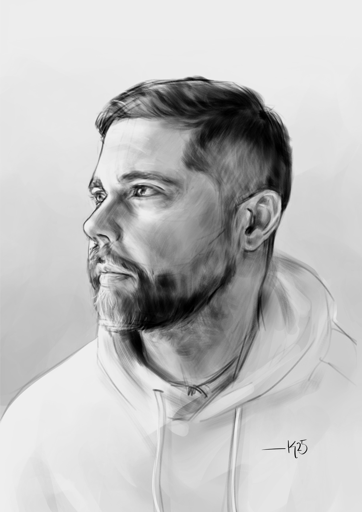

<!DOCTYPE html>
<html lang="es">
<head>
  <meta charset="utf-8">
  <meta name="viewport" content="width=device-width, initial-scale=1">

  <!-- Google Tag Manager -->
  <script>(function(w,d,s,l,i){w[l]=w[l]||[];w[l].push({'gtm.start':
  new Date().getTime(),event:'gtm.js'});var f=d.getElementsByTagName(s)[0],
  j=d.createElement(s),dl=l!='dataLayer'?'&l='+l:'';j.async=true;j.src=
  'https://www.googletagmanager.com/gtm.js?id='+i+dl;f.parentNode.insertBefore(j,f);
  })(window,document,'script','dataLayer','GTM-PFGGFRQF');</script>
  <!-- End Google Tag Manager -->
   
  <title>Cristina Pacheco Arte</title>

  <!-- Bootstrap CSS y JS-->
  <link rel="stylesheet" href="librerias.css">
  <script type="module" src="main.js"></script>


</head>
<body>

    <!-- Google Tag Manager (noscript) -->
  <noscript><iframe src="https://www.googletagmanager.com/ns.html?id=GTM-PFGGFRQF"
  height="0" width="0" style="display:none;visibility:hidden"></iframe></noscript>
  <!-- End Google Tag Manager (noscript) -->

  <div id="header"></div>

  <main class="index">
    
    <aside>
      <!-- Carrusel-->
      <div id="carouselArte" class="carousel slide" data-bs-ride="carousel">
        <div class="carousel-inner">

          <div class="carousel-item active">
            
            <div class="carousel-caption d-none d-md-block">
              <h5>Retrato digital</h5>
              <p>Retratos digitales cuidados para no perder la esencia del retrato clásico.</p>
            </div>
          </div>

          <div class="carousel-item">
            
            <div class="carousel-caption d-none d-md-block">
              <h5>Obras con medios tradicionales</h5>
              <p>Carboncillo, lápiz, tinta y acrílico entre otros.</p>
            </div>
          </div>

          <div class="carousel-item">
            
            <div class="carousel-caption d-none d-md-block">
              <h5>Ilustración</h5>
              <p>Ilustración digital y tradicional.</p>
            </div>
          </div>

        </div>

        <button class="carousel-control-prev no-hover" type="button" data-bs-target="#carouselArte" data-bs-slide="prev" aria-label="Anterior">
          <span class="carousel-control-prev-icon" aria-hidden="true"></span>
        </button>
        <button class="carousel-control-next no-hover" type="button" data-bs-target="#carouselArte" data-bs-slide="next" aria-label="Siguiente">
          <span class="carousel-control-next-icon" aria-hidden="true"></span>
        </button>

        <div class="carousel-indicators">
          <button type="button no-hover" data-bs-target="#carouselArte" data-bs-slide-to="0" class="active" aria-label="Slide 1"></button>
          <button type="button no-hover" data-bs-target="#carouselArte" data-bs-slide-to="1" aria-label="Slide 2"></button>
          <button type="button no-hover" data-bs-target="#carouselArte" data-bs-slide-to="2" aria-label="Slide 3"></button>
        </div>
      </div>
    </aside>

    <div class="secciones">
      <section class="sobremi">
        <a href="sobremi.html"> 
        </a>
      </section>
      <section class="sobremi">
        <a href="/exposicion.html"> 
        </a>
      </section>
    </div>
  </main>

  <footer id="footer"></footer>

  <script src="https://cdn.jsdelivr.net/npm/bootstrap@5.3.2/dist/js/bootstrap.bundle.min.js"></script>


</body>
</html>
